Bulletins neige
Des bulletins neige quotidiens pour les skieurs : où est la neige, ce qui arrive et où skier, d'après la carte de neige SnowScope et les stations de mesure. Chaque chiffre vient des données du jour.
À la une

Le détecteur de sommets de SnowScope est une application gratuite pour identifier les sommets : pointez votre téléphone vers les montagnes et il nomme les sommets, avec leur altitude, leur distance et le temps de montée. Nos tests : 98 % des sommets affichés sont réellement visibles, et sur de vraies photos il a ramené des erreurs de boussole allant jusqu'à 105° à 0,15°. Gratuit avec 3 noms, tous les sommets pour 0,99 € une seule fois.
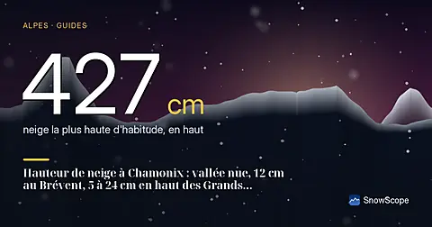
La hauteur de neige à Chamonix le 13 novembre 2026, altitude par altitude : rien au fond de la vallée, 1 cm à 2001 m, 12 cm en haut de Brévent-Flégère (2486 m), 5 à 24 cm en haut des Grands Montets (2768 m). Environ un mètre prévu en altitude cette semaine, de la pluie dans la vallée. L'épaisseur habituelle sur 46 hivers.

Moins de jours de neige aux 120 points étudiés dans les Pyrénées depuis 1980-81, surtout sous 1 500 m : notre série de 46 hivers et la recherche.

Planifiez votre séjour de décembre 2026 aux Les Orres en comparant les prix des forfaits hebdomadaires avec notre historique de neige de 46 hivers passés.

Grandvalira est souvent vendue comme une destination pas chère en décembre, pourtant la neige naturelle à la base n'atteint en moyenne que 9 cm lors des hivers passés.

Les neiges de début de saison dans les Alpes dépassent de 38 % la moyenne des 46 dernières années. Les pentes intermédiaires de La Plagne accumulent 36 cm de plus que d'habitude à cette date, avec de fortes chutes prévues jusqu'à dimanche.

Nous avons comparé la neige du 10 novembre avec la neige la plus épaisse de chaque hiver, dans 46 stations de ski et sur 46 hivers. Un début enneigé aide, mais moins que beaucoup de skieurs ne le pensent.

Whistler Blackcomb a reçu 75 cm de neige nouvelle au sommet en une semaine, puis une tempête douce avec 124 mm d'eau. Un guide simple sur la sous-couche, la neige fraîche, la pluie et la croûte.

Une tempête le 4 novembre a laissé 8 à 13 inches de neige fraîche sur cinq stations d'altitude du Colorado, près d'Aspen. Cinq jours plus tard, la moitié avait disparu. Ce que cela veut dire pour vos journées de poudreuse.

Mad River Glen, Vermont : neige naturelle, environ 30 in (75 cm) au pic habituel à mi-pente sur 46 hivers passés, février le plus enneigé. Trois façons de prévoir sa journée.

Le Mt. Baker en décembre : 46 in (116 cm) de neige à mi-montagne pour un 15 décembre type, et un forfait à 98,80 $ du lundi au jeudi, vendu uniquement sur place le jour même.

Un carnet pratique sur Oukaïmeden, dans le Haut Atlas : quand la neige arrive, en quelle quantité, quelles pentes viser et comment y aller depuis Marrakech.
Whistler Blackcomb pour tous les niveaux, avec notre historique : environ 370 cm au pic habituel à mi-pente sur 46 hivers passés, mars et avril les plus enneigés.

Un mélange de pluie et neige est attendu sur les Pyrénées au cours des trois prochains jours, l'isotherme 0 °C dépassant les sommets des stations dès dimanche. Entre 13 et 24 cm de neige nouvelle prévue en altitude.

Le niveau de congélation atteint 1 500 m à Banff Sunshine Village le 19 novembre. De la neige fraîche est tombée dans tout l'ouest du Canada au cours des 72 dernières heures, mais la pluie menace la poudreuse nouvelle.

Combien d'eau la neige de l'Atlas pourrait garder en février 2027 : la prévision saisonnière européenne est environ 3 °C plus douce et plus humide à l'ouest et au sud, et les chances de neige restent faibles sur les bassins du Maroc.

De la neige fraîche est tombée sur les hautes montagnes françaises au cours des 72 dernières heures. Le massif du Mont-Blanc en a reçu le plus : 180 cm. Données du 18-11-2026.

La Grave affiche 171 cm de neige, bien en tête de la moyenne typique de 82 cm pour fin novembre. Les Alpes françaises ont gagné 90 cm en 72 heures au 22 novembre.

Choisissez une région, vos dates, votre budget et ce qui compte ; chaque station est classée avec la neige probable au départ, le forfait, l'hôtel et les repas par personne, les chalets à réserver, et un mode jeu.

Forfaits journée alpins dès 36 EUR : neuf stations comparées selon le prix, les kilomètres de pistes et la neige qu'elles reçoivent habituellement, pour trouver la meilleure journée de ski pour votre argent.

Des forfaits journée dans les Pyrénées à partir de 46 EUR : six stations en France, en Espagne et en Andorre comparées par prix, puis par l'enneigement qu'elles connaissent habituellement en décembre et en janvier.

Ski sur glacier à partir de 68 EUR la journée : nous avons comparé sept glaciers en France, en Autriche, en Allemagne et en Suisse selon le prix et l'enneigement qu'ils affichent habituellement en décembre.

Six jours de ski à partir de 191 EUR : nous avons classé dix forfaits de ski pas chers en Europe par prix, puis vérifié 46 hivers passés pour savoir où la neige est fiable.


Prévisions Canada occidental : 90 cm de neige nouvelle à Mount Washington au cours des deux prochaines semaines, avec 70 cm attendus fin novembre et début décembre. Modèle du 18-11-2026.

Prévisions de neige fraîche pour les Alpes jusqu'à début décembre. Saint François Longchamp en tête avec 228 cm attendus sur 14 jours, en commençant par 35 cm jeudi.

Les Grands Montets ont enregistré 74 cm de neige fraîche ces dernières 72 heures, avec d'autres chutes prévues pour les jours à venir, selon notre modèle au 17 novembre 2026.

Orelle enregistre 42 cm, proche des 53 cm typiques pour la mi-novembre. Des chutes de neige prévues sur les Alpes au cours des trois prochains jours.

96 cm de neige nouvelle prévus aux Arcs sur les trois prochains jours, avec aujourd'hui apportant les chutes les plus importantes ; simulation du 16 novembre.

Whistler Blackcomb a enregistré 76 cm de neige fraîche au cours des dernières 72 heures, et Mount Cain Alpine Park a également reçu 64 cm, en date du 16 novembre 2026.

Orelle a atteint 31 cm le 16 novembre, en hausse de 17 cm en une semaine. Les Alpes devraient recevoir jusqu'à 103 cm de neige supplémentaire d'ici le 19 novembre.

À Big White le 15 novembre, les pentes supérieures retiennent 68 cm près du sommet tandis que la base reste dégagée ; un gradient vertical extrême typique du début de saison.

Prévision de 79 cm de neige nouvelle aux Grands Montets du 16–18 novembre, principalement au-dessus de 2 000 m d'altitude, selon le modèle de prévision du 15 novembre.

Pluie prévue alors que le niveau de congélation monte à 4 080 m ; la neige mesurée le 15 novembre est fine (moins de 20 cm) dans toutes les grandes stations des Pyrénées.

Courmayeur en tête du pronostic avec 88 cm en 72 heures ; l'épaisseur de neige atteint 142 % de la normale pour mi-novembre selon les données du 15 novembre.

Skiez sur 157 km de pistes balisées à Serre Chevalier, où le sommet de la montagne a 100 % de chances d'être enneigé d'ici la mi-décembre.

Dix stations de ski européennes classées pour leur rapport qualité-prix en décembre, avec Les 2 Alpes en tête avec 75 cm de neige à mi-montagne.

Boí Taüll commence à 2 039 m et bat Baqueira Beret sur le prix du forfait, bien que la neige de début décembre demande un peu de patience.

Orcières Merlette offre une base élevée à 1 826 m et un forfait 6 jours dès 227 EUR, ce qui en fait un choix fiable pour un séjour au ski en décembre.

Alpe d'Huez vaut-elle le coup en décembre 2026 ? Nous vérifions les probabilités de neige, le prix de départ de 58,00 EUR et comparons avec Les 2 Alpes.

Cauterets propose 25 km de pistes pour 46 EUR, mais notre historique d'enneigement montre que la meilleure chance d'avoir de la neige est la dernière semaine de décembre.
Skiez sur les 131 km de pistes de la Forêt Blanche en décembre avec un forfait six jours à 298 EUR.

À Monterosa Ski, le forfait journée en ligne va de 40,00 à 71,00 EUR. En décembre, la neige est en altitude : 124 cm habituels à 3 030 m, 6 cm à 1 207 m.

Comparez Grandvalira et les stations espagnoles en décembre 2026 pour les hauteurs de neige, l'altitude des remontées et les prix à partir de 49,00 EUR.

Pour une semaine de ski en famille à petit budget à Astún-Candanchú en décembre, visez la fin du mois, quand les pistes supérieures ont une bonne neige dans 67 % des hivers passés.

Puy-Saint-Vincent propose un forfait adulte 1 jour à 44 EUR avec une bonne neige en décembre en altitude, comparé ici à son grand voisin Serre Chevalier.

Grimentz-Zinal propose 71 km de pistes et un enneigement fiable en altitude pour votre voyage en décembre, avec des forfaits 6 jours à CHF 339,00.

Autriche avant Noël : Galtür 258 EUR et Kühtai 269 EUR les 6 jours, avec 30 cm dans plus de 90 % des hivers ; les glaciers coûtent plus, les petites stations sont un pari.

Vous prévoyez un voyage en décembre à Baqueira Beret ? Consultez notre historique d'enneigement, les prix des forfaits à partir de 70,00 € pour une journée, et comparez avec Astún-Candanchú.

Nous classons les stations de ski françaises selon les probabilités de neige en décembre et le prix des forfaits, à partir de 36,00 EUR pour un forfait journée adulte aux Karellis.

Comparez les probabilités de neige en décembre et les tarifs vérifiés de forfaits dès 40,00 EUR dans les domaines skiables italiens pour votre week-end en voiture.

Les 2 Alpes culmine à 3 511 m pour de la neige abondante en décembre 2026, avec un forfait adulte 6 jours à 266,50 EUR.

Les Karellis propose 45 km de pistes et un forfait adulte 6 jours à 191,00 EUR avec 98 % de chances d'avoir de la neige à mi-montagne fin décembre.

Skiez à Livigno pour 51,50 EUR par jour avant le 18 décembre, quand la neige au sommet atteint 30 cm dans 100 % des hivers passés.

Montgenèvre affiche 56 cm de neige habituelle en décembre à son pied de station, offrant aux skieurs du week-end une meilleure couverture précoce que Sestriere, de l'autre côté de la frontière.
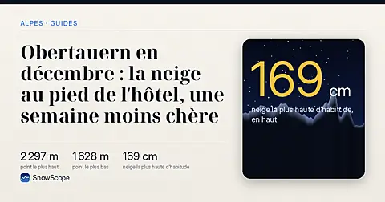
Skier à Obertauern en décembre : 43 cm un 15 décembre typique à mi-pente, forfait 6 jours à 331 EUR avant Noël. Historique de neige et prix.

Pila, au-dessus d'Aoste, combine un forfait journée fixe à 60,00 EUR et une neige fiable en décembre sur ses pistes d'altitude.

Les remontées de Saas-Fee atteignent 3 556 m, où notre historique montre que 100 % des hivers passés ont au moins 30 cm de neige à la mi-décembre.
Chances de neige en décembre sur 46 hivers et prix journaliers vérifiés : Ski Cooper 49 $, Les 3 Vallées 75,70 €, Oukaïmeden sans tarif officiel. Là où une journée de ski pas chère en décembre fonctionne.
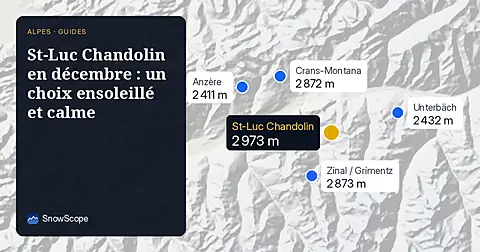
Découvrez les pistes tranquilles de St-Luc Chandolin, où la neige à mi-montagne atteint 30 cm dans 98 % des hivers fin décembre.

Valloire-Valmeinier propose 131 km de pistes et 98 % de chances d'avoir 30 cm de neige à mi-montagne mi-décembre.

Un débutant prudent peut-il faire confiance à Courmayeur en décembre, alors que la moyenne à mi-montagne est de 60 cm de neige sur nos hivers passés ?

Le manteau neigeux de La Grave a gagné 17 cm en une semaine pour atteindre 43 cm le 14 novembre, avec une prévision de 61 cm supplémentaires dans les 72 heures à venir alors qu'un système se déplace sur les Alpes.

Chutes de neige à Val Thorens, 13 novembre 2026 : 27 cm tombés au sommet (3175 m) et 17 cm à 2498 m en sept jours ; hauteur de neige de 50 cm et 8 cm. Sept prochains jours : 86 cm au sommet, 73 cm à 2498 m, limite pluie-neige bien sous le village. La saison habituelle sur 46 hivers.
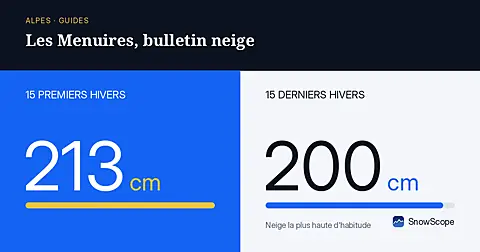
Bulletin neige des Menuires du 13 novembre 2026 : 28 cm au sommet (2838 m), rien au sol à 2112 m ni à 1386 m. Environ 80 cm attendus au sommet en sept jours, limite pluie-neige vers 1500 à 1700 m. Pourquoi Val Thorens, 450 m plus haut dans la même vallée, en a déjà plus.

Les conditions de neige à Tignes le 13 novembre 2026 : 42 cm au sommet (3447 m), 12 cm à 2503 m, une vallée sans neige à 1559 m, et 99 cm prévus au sommet sur sept jours, avec de la pluie sous 1700 m environ. La comparaison avec 46 hivers passés.


Les pentes hautes de Dent de Vaulion font face à la pluie avec le niveau de congélation atteignant 2 800 m jeudi ; les stations d'altitude reçoivent de la neige fraîche pour le week-end.

La Grave domine les Alpes avec 52 cm prévus en 24 heures au 11 novembre ; la neige précoce arrive des semaines avant l'accumulation maximale.

Au-dessus de 1 500 m autour du Toubkal, le sol a été blanc 94 jours pendant l'hiver 2025-26, le plus en 26 hivers d'images satellite. Jusqu'où la neige est descendue, quand elle est partie, et comment cet hiver se compare à 2008-09 et aux années sèches.

Combien de temps les Pyrénées sont restées blanches chaque hiver depuis 2000-01, vu par satellite, et la hauteur de neige à 10 stations aux longues séries. Trois hivers maigres d'affilée ont pris fin en 2025-26 ; cet automne a commencé normalement.

Une carte des pentes des Grands Montets et de sept autres domaines skiables montre quelle part du terrain dépasse 30°, 35° et 40°, et pourquoi ce seuil compte pour les avalanches.

Sur 46 hivers, les stations du versant italien et des Alpes du Sud françaises ont connu 24 fois un hiver relativement plus généreux que le versant nord. Le graphique, les grandes années et la météo qui les explique.

En décembre, la neige dépend d'abord de l'altitude. 46 hivers passés dans 676 stations des Alpes montrent combien de neige attendre le 1er, le 15 et le 22 décembre, de moins de 1 200 m à plus de 2 400 m.
Un séjour de 3 jours pas cher au lac de Côme en décembre, avec les vrais prix 2026-27 : trains, bateaux, funiculaire et ski à Piani di Bobbio ou Madesimo, l'économie par rapport à Cortina et les chances de neige à Noël.

Piau-Engaly domine la prévision avec 37 cm de neige fraîche d'ici le 13 novembre ; 24 cm sont attendus le 12 novembre.

Vail en chiffres : un pic habituel d'environ 64 in (162 cm) à mi-pente sur 46 hivers passés, mars le mois le plus enneigé, plus domaine, accès et sécurité.

Zermatt en chiffres : où la neige tient, les mois les plus sûrs et comment rejoindre le village sans voitures, d'après 46 hivers passés.

Steamboat, Colorado, en famille : ce qui convient aux tout-petits, aux enfants, aux ados et aux parents, avec la neige de 46 hivers passés à trois altitudes.

Verbier est-il fait pour les débutants ? Quand la neige est-elle la meilleure ? Comment y aller ? Réponses sur les 4 Vallées et 46 hivers passés.

Comment passer un premier jour à Park City Mountain, Utah, et quand y aller : notre historique donne environ 71 in (180 cm) au pic habituel à mi-pente sur 46 hivers passés.

Le Sella Ronda depuis Sëlva dans le Val Gardena : cols de Gardena, Campolongo, Pordoi et Sella dans l'ordre, avec notre historique de neige de 46 hivers passés.

Mt Baker, État de Washington : environ 133 in (337 cm) au pic habituel à mi-pente sur 46 hivers passés, un record mondial de neige, aucun hébergement sur place.
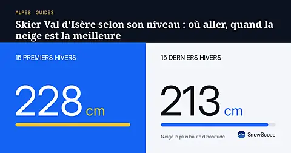
Val d'Isère et l'Espace Killy pour débutants, skieurs moyens et experts, avec la neige de 46 hivers passés à trois altitudes.

Préparez Mammoth Mountain selon la saison : environ 93 in (235 cm) au pic habituel à mi-pente sur 46 hivers passés, mars le plus enneigé, longs printemps, hivers variables.
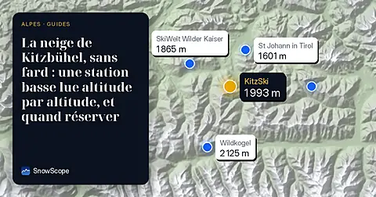
Kitzbühel est célèbre et basse. Ce que disent 46 hivers passés de la neige à 762 m, 1 377 m et 1 993 m, ce qui a changé, et quelles semaines sont le pari le plus sûr.

Dix points pratiques pour un séjour de ski à Livigno : les routes, le froid, les boutiques détaxées, les deux versants et le meilleur moment pour la neige, d'après 46 hivers passés.
Rejoindre Telluride en hiver, aéroport par aéroport : Telluride Regional, Montrose, la route 145 avec la loi de traction du Colorado, et la télécabine gratuite vers Mountain Village.
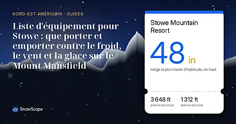
Une liste pratique pour Stowe, Vermont : couches, protection du visage, masque, carres affûtées et chaufferettes, reliée à la neige de 46 hivers passés sur le Mount Mansfield.
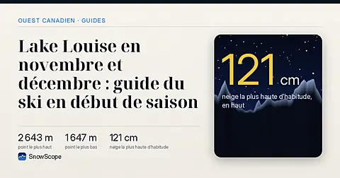
Skier à Lake Louise en début de saison : pourquoi la station démarre tôt, à quoi ressemble d'habitude la neige de novembre et décembre sur 46 hivers passés, et comment skier une neige encore mince.

Ce qui est vrai à La Grave, la montagne hors-piste sous la Meije : terrain, sécurité, neige par mois et tendance, d'après 46 hivers passés.

Big Sky, Montana, facile à se représenter : 5 850 acres sous le Lone Peak, et une neige environ cinq fois plus épaisse près du sommet qu'en bas sur 46 hivers passés.

Skiez d'abord en pensée tout le dénivelé de Revelstoke : la neige au sommet, à mi-pente et en bas dans la vallée sur 46 hivers passés, et quand chaque partie est au mieux.

Sept jours dans la Silvretta Arena, un par un : où est la neige, quand passer à Samnaun, et ce que disent 46 hivers passés de la neige d'Ischgl à trois altitudes.

Aspen Snowmass comparé : Snowmass a environ 75 in (190 cm) au pic habituel à mi-pente sur 46 hivers passés, Aspen Mountain environ 69 in (174 cm). Terrain, accès, sécurité.

Gourette et Cauterets côte à côte : altitudes, neige habituelle par mois, meilleures semaines et accès, d'après 46 hivers passés.

Banff Sunshine Village mois par mois : environ 100 cm à mi-pente en mars d'un hiver habituel sur 46 hivers passés, avril le plus enneigé en haut, saison jusqu'à fin mai.

L'Alpe d'Huez fait face au soleil. Comment organiser sa journée selon l'heure et l'altitude, avec la neige de 46 hivers passés, des villages bas au Pic Blanc.
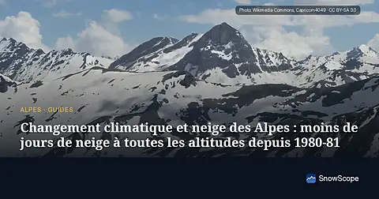
Notre série de 46 hivers dans les Alpes, 108 points de 667 à 3 872 m : moins de jours de neige partout, nettement à 81 %. Ce qui a changé et pourquoi.


Baqueira-Beret est dans le Val d'Aran, côté atlantique des Pyrénées. Ce que cela change pour sa neige, vérifié sur 46 hivers passés face à La Molina, et quand y aller.

Comment passer une première journée de ski à Chamonix, des Grands Montets au-dessus d'Argentière au bon moment pour chaque pente, avec 46 hivers de données.

Cortina d'Ampezzo de trois façons : Tofana, Faloria-Cristallo et Cinque Torri-Lagazuoi, avec 46 hivers de données de neige à trois altitudes.

Chantarella, Marguns, Piz Nair, White Turf : les mots qu'on entend à St-Moritz, expliqués, et ce que 46 hivers passés de notre historique de neige disent de chaque altitude de la Corviglia.
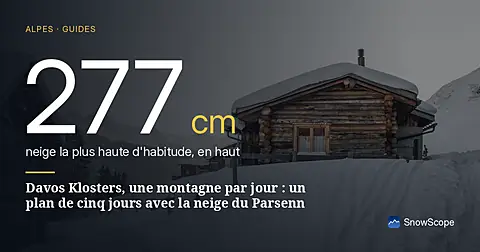
Davos et Klosters partagent six montagnes de ski. Un plan jour par jour, en commençant par le Parsenn, avec ce que 46 hivers passés de notre historique disent de ses altitudes.

Quand réserver Courchevel et les 3 Vallées, quel village choisir et où la neige tient, d'après 46 hivers passés.

St Anton et Ski Arlberg au fil de l'hiver : la hauteur de neige habituelle chaque mois à trois altitudes, d'après 46 hivers passés.

Mount Washington retient 145 cm le 8 novembre, le plus profond de l'Ouest canadien, mais le niveau de congélation montera au-dessus du sommet d'ici le 11 novembre.
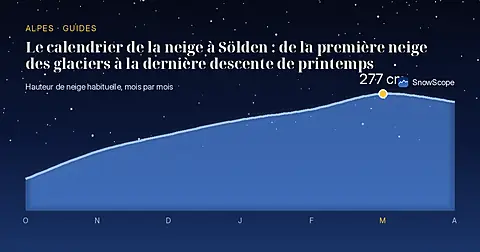
Une année de neige à Sölden, phase par phase : quand les glaciers blanchissent, le week-end de Coupe du monde, le cœur de l'hiver et les semaines de printemps, d'après 46 hivers passés à trois altitudes.

Comment réussir une journée à Luz-Ardiden, petit domaine au-dessus de Luz-Saint-Sauveur dans les Hautes-Pyrénées : la route, les deux secteurs, la neige de 46 hivers passés et les semaines à choisir.

Whistler Blackcomb a reçu 100 cm de poudreuse en 72 heures jusqu'au 8 novembre, mais elle est tombée de manière inégale : 96 cm au sommet, rien à la base.

Whistler Blackcomb a gagné 24 cm en une semaine pour atteindre 50 cm total ; 62 cm supplémentaires prévus en 72 heures alors que des tempêtes majeures frappent les montagnes (données du 8 novembre).

Michlifen, près d'Ifrane, a de la neige par courts épisodes plutôt qu'une saison. Ce que montrent 46 hivers passés, pourquoi la hauteur habituelle est nulle, et comment être là les bons jours.

Trois façons de passer une journée depuis Méribel : à l'est vers Courchevel, au sud vers Val Thorens, ou sur place au Mont Vallon, avec la neige de 46 hivers passés à trois altitudes.

Environ 192 mm d'eau sur le haut de Whistler du 7 au 12 novembre : l'isotherme 0 °C oscille entre 1 410 et 2 920 m, neige en altitude, pluie plus bas.
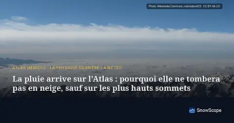
Environ 65 mm sur le Toubkal d'ici le 12 novembre, mais l'isotherme 0 °C reste vers 4 000 m : pluie à Oukaïmeden et dans les vallées, neige au sommet seulement.

Orcières Merlette mène les prévisions des Alpes avec 36 cm de neige nouvelle en trois jours, principalement les 9–10 novembre, selon les données du 7 novembre.
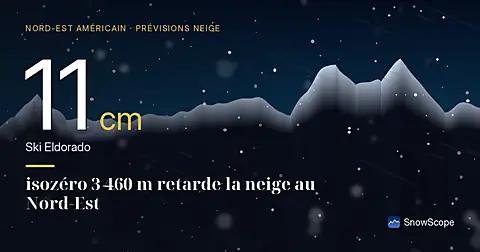
Ski Eldorado prévoit 11 cm de neige fraîche, mais l'isozéro atteint 3 460 m le 6 novembre, retardant l'arrivée de la neige au Nord-Est.

Prévision Whistler Blackcomb : 74 cm en 72 heures ; les semaines 13, 12, 11 apportent les neiges les plus abondantes de l'année historiquement. Prévision du 5 novembre.


Les hauteurs de neige en Alpes sont en retrait par rapport à la normale en début novembre, avec seulement 55 cm dans les meilleures stations au 3 novembre.

La neige au 3 novembre 2026 : Kendall Mountain 53 in (134 cm) après une tempête, Big White 91 cm, les Alpes jusqu'à 55 cm à Bonneval-sur-Arc. Modèle et mesures.